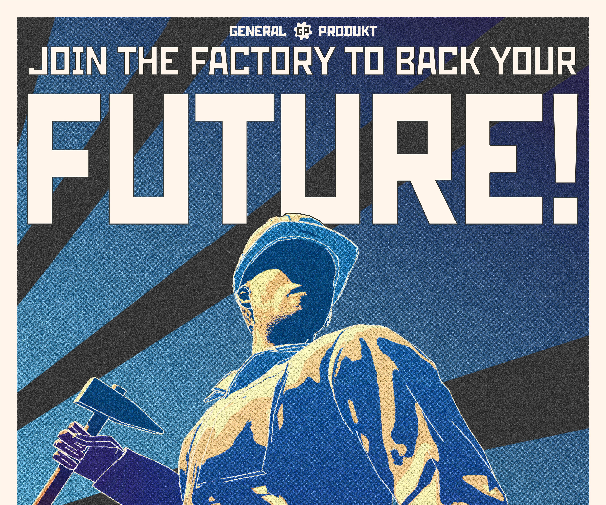

PROJECT AIM
My final year project titled is a response to the idea a copy of a copy. As someone fascinated by Cold War history, this reminded me of how propaganda was used by both side to pres- ent an idealised copy of daily life, glorifying painstaking jobs and antagonizing the opposition. This inspired me to create a series of similar posters. Through the settings of a factory, these works depict an idealised life and the dangers of unions, calling for obedience and hard work.
DESIGN & UI RESEARCH
I search for many inspiratoin from the cold war era. I also took many inspiration from modern popular media from books to video games.


PROTOTYPING
I experimented with border size, composition and colour for my posters, I ended up using a character as the centre piece rather than the factories and machineries to tie in the propaganda motif.
While I initially used more desaturated color to replicate the vintage style, I decided to use stronger colours and padding space for a more modern style. As I intend to bring a modern spotlight, and make them stand out among more rounded and steady contemporary design.


Final Results
These are the final digital and physical prints